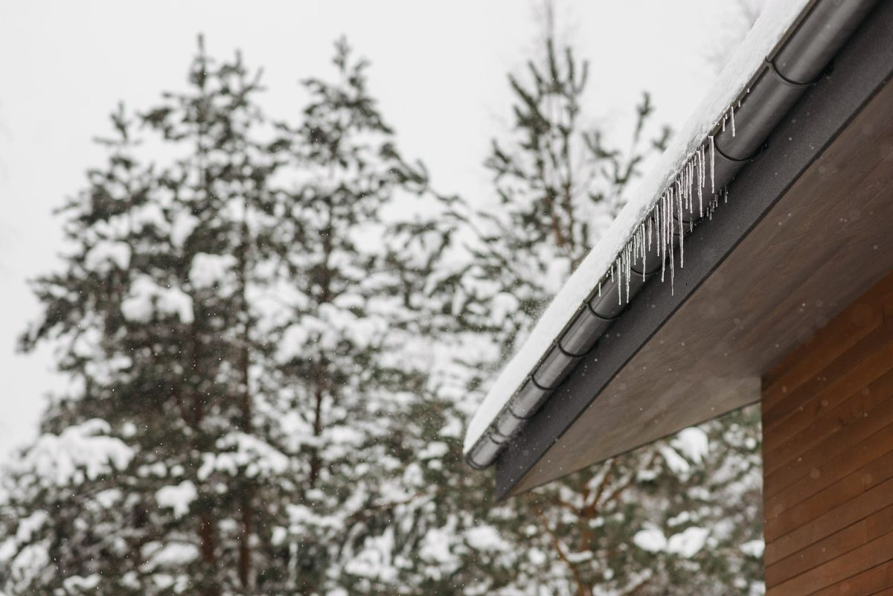
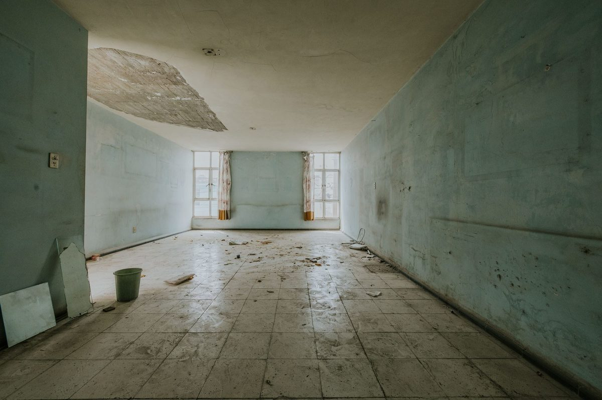

Burst Pipe Water Damage Restoration in Plano, TX
A pipe just burst in your attic, inside a wall, or under the slab, water is pouring through ceilings, running down walls, and pooling on floors. Shut off the main water valve at the meter box in your front yard (turn the valve clockwise or perpendicular to the pipe). Then call (214) 833-4785 immediately, our IICRC certified crew is dispatched 24/7 with truck-mounted extraction and structural drying equipment.
📞 (214) 833-4785, Burst Pipe Emergency, Crew Dispatched Now
- ✓ Attic & wall pipe breaks
- ✓ Collapsed ceiling cleanup
- ✓ Insurance documentation
Call Now: 24/7 Burst Pipe Cleanup | Contact Us
Does Insurance Cover Burst Pipe Water Damage in Texas?
Most Texas homeowner policies cover sudden burst pipe water damage, including freeze breaks. Gradual leaks are often excluded. Photos, moisture readings and drying logs help support a Plano homeowner's claim.
What Should I Do When a Pipe Bursts in My Plano Home?
Shut off the main water valve immediately, the meter box is typically in your front yard near the curb. Turn the valve clockwise or perpendicular to the pipe to stop flow. If the burst is in the attic and water is coming through the ceiling, cut power to affected rooms at the breaker panel if you can reach it safely. Do not stand under a sagging, water-filled ceiling, it can collapse. Move electronics and valuables out of the water's path. Then call (214) 833-4785 for 24/7 emergency burst pipe water damage restoration.

Why North Texas Pipes Burst During Freezes
North Texas homes aren't built for long stretches of hard freezing, and the February 2021 winter storm showed how quickly that turns into widespread pipe failures. In Plano, the most common weak points are:
- Attic plumbing in uninsulated or poorly insulated areas
- Pipes in exterior walls, especially north-facing ones
- Garage walls and lines near garage doors
- Outdoor hose bibs where a split pipe sits inside the wall
- PEX and copper lines near gaps where cold air gets in
Water expands when it freezes, pressure builds between the ice and a closed faucet, and the pipe splits. Often it doesn't leak until it thaws, which is why so many frozen pipe burst cleanup calls in Plano come in once temperatures rise again.
Common Burst Pipe Scenarios in Plano
Attic Pipe Burst, The Worst-Case Residential Water Loss
Many Plano homes, especially in Deerfield, Hunters Glen, Canyon Creek, Kings Ridge and two-story homes throughout 75024, 75025 and 75093, have water heater supply lines, HVAC condensate lines, and bathroom plumbing running through the attic. When a supply line fitting fails, a copper line develops a pinhole, or a joint separates, water flows through attic insulation, soaks ceiling joists, saturates ceiling drywall, and cascades into rooms on every floor below.
An attic pipe burst is the most damaging residential water loss because gravity distributes water throughout the home. Restoration typically requires ceiling drywall removal, insulation removal, attic deck drying, wall-cavity drying on multiple floors, and flooring extraction and drying on the ground floor.
Wall Pipe Burst, Hidden Damage
A supply line or drain that fails inside a wall cavity sends water downward between studs, soaking framing, insulation and the back side of drywall on both sides. The water hits the bottom plate, spreads across the slab or subfloor, and wicks into adjacent walls. By the time you see a wet spot on the wall surface, water has been running inside the cavity for hours.
Wall pipe bursts are common in bathrooms (supply lines to sinks, toilets and showers), kitchens (supply lines behind the dishwasher and refrigerator) and laundry rooms (washing machine supply hoses and drain connections).
Under-Slab Pipe Burst, Sudden Slab Leak
Unlike the slow pinhole slab leaks caused by soil pressure, a catastrophic pipe burst under the slab releases large volumes of water quickly. The slab surface floods with pressurized water that pushes up through cracks, expansion joints and slab penetrations. This type of loss saturates the entire slab surface and every material resting on it. See our slab leak water damage page for the full drying process.
Winter Freeze Pipe Burst
North Texas gets freezing weather several times each winter. Pipes in exterior walls, in uninsulated attic spaces, and in garages are vulnerable to freezing and bursting when temperatures drop below 28°F for extended periods. The 2021 winter storm and subsequent freezes demonstrated that Plano homes, designed primarily for heat, are particularly susceptible to freeze damage in attic plumbing.
Multi-Story Water Damage: From Attic to Slab
A pipe that bursts in the attic doesn't stay in the attic. Water soaks blown-in insulation, pools on the ceiling drywall, and finds the easiest path down: light fixtures, vents, wall cavities and stairwells. In two-story Plano homes, one attic leak can damage both floors.
| Area | What We Do |
|---|---|
| Attic | Remove soaked blown-in or batt insulation, dry decking and joists |
| Ceilings | Controlled drainage, remove sagging or collapsed drywall, dry framing |
| Walls | Moisture map cavities, dry in place or flood cut as needed |
| Floors | Extract carpet and hard surfaces, dry subfloor or slab |
| Contents | Move, protect or pack out furniture and belongings |
Wet ceilings have their own page with more detail: ceiling and drywall water damage.
Pipe Burst in the Attic and the Ceiling Collapsed
This is one of the most urgent calls we get. Collapsed drywall, soaked insulation on the floor and water running down walls. We clear debris safely, extract water from the floors below, remove the remaining wet ceiling, and set up drying for the attic and every floor the water reached. See ceiling water damage.
Frozen PEX Pipe Burst Inside a Wall
When a line splits inside a wall, water can run behind drywall unseen until it reaches the floor. We use thermal imaging to trace it, open the wall only where needed, and dry the cavity, studs and bottom plate.
Busted Outdoor Spigot Flooding an Interior Wall
Freeze-resistant hose bibs can still burst if a hose was left connected during a freeze. The break is usually inside the wall, so water floods the room behind it. We dry the wall cavity and flooring, and your plumber replaces the bib.
Drying During Cold Weather
Drying in winter works differently. Cold air holds less moisture and slows evaporation. We manage temperature inside the work area and choose the right dehumidifiers so drying keeps moving even when it's freezing outside.
InsuranceDocumenting a Burst Pipe Claim
Most homeowner policies cover sudden and accidental discharge, which is how a burst pipe is usually classified. To help your claim:
- Keep the broken section of pipe if your plumber removes it
- Photograph damage before cleanup
- Save receipts for emergency repairs and hotel stays if you had to leave
We provide photos, moisture readings, drying logs and an itemized estimate your adjuster can review.

Burst Pipe Water Damage Restoration Process
Emergency Source Control
If you haven't shut off the main valve, we help you locate and close it immediately. For attic bursts, we also cut the supply line above the failure point to prevent residual drainage.
Electrical Safety Check
We verify that no live electrical connections, outlets, switches, junction boxes, ceiling fixtures, are in contact with or submerged in water. Breakers to affected circuits are turned off before extraction begins.
Thermal Moisture Mapping
FLIR thermal cameras map the full extent of water migration through ceilings, walls and floors, showing us exactly which rooms, cavities and materials are affected so we don't under-dry or over-demolish.
Water Extraction
Truck-mounted extractors remove standing water from every affected surface. Ceiling drywall that is sagging or fully saturated is removed to drain trapped water from the attic or interstitial space above. Carpet, hard surface and hardwood extraction follows.
Controlled Demolition
Wet insulation comes down from the attic. Saturated lower drywall and baseboards are removed to expose wall cavities. Carpet pad is pulled in wet areas. Every piece removed is photographed for insurance documentation.
Structural Drying
LGR dehumidifiers, air movers, wall-cavity drying systems and (for hardwood) floor mat systems are placed and calculated per IICRC S500 psychrometric guidelines. Daily moisture monitoring continues until every material reaches dry standard.
Full Reconstruction
Ceiling drywall, wall patches, texture matching, paint, flooring, baseboards, trim, insulation replacement and any cabinet or fixture repairs. See water damage reconstruction.
Burst Pipe FAQs
How much damage can a burst pipe cause in one hour? +
A ½-inch supply line at normal residential pressure releases approximately 8 to 10 gallons per minute, that's 480 to 600 gallons per hour. An attic burst running for one hour can saturate ceiling drywall across three or four rooms, soak insulation, and put hundreds of gallons on the floors below. This is why shutting off the main valve immediately is the single most important step. Call (214) 833-4785.
My ceiling is sagging and dripping, is it going to collapse? +
A fully saturated section of drywall can collapse without warning. Do not stand or place anything valuable under a sagging, water-filled ceiling. Stay out of the room and call (214) 833-4785, we safely drain and remove saturated ceiling sections as part of the emergency response.
Does insurance cover burst pipe water damage in Plano? +
Yes, burst pipe damage is one of the most commonly covered water damage claims under Texas homeowner policies. It's sudden and accidental, which is the standard your policy uses. We document everything in Xactimate with pre-work photography, daily moisture logs and a final drying report for your adjuster at State Farm, Allstate, USAA, Farmers or any carrier. Call (214) 833-4785.
Can you save my ceiling after a burst pipe or does it all need to be replaced? +
It depends on how saturated the drywall is and how long the water sat. Drywall that is sagging, crumbling, or has been wet for more than 24 hours typically needs replacement. Drywall that is damp but still structurally sound can sometimes be dried in place with air movers. We assess every section individually and save what can be saved. Call (214) 833-4785.
Pipe Just Burst in Your Plano Home? Call (214) 833-4785
Shut off the main water valve, then call (214) 833-4785 immediately. 24/7 IICRC certified crew dispatched with truck-mounted extraction, FLIR thermal imaging, LGR drying equipment and full reconstruction capability. One call, emergency to rebuild.
Pipe Just Burst in Your Plano Home? Call (214) 833-4785
Shut off the main water valve, then call (214) 833-4785 immediately. 24/7 IICRC certified crew dispatched with truck-mounted extraction, FLIR thermal imaging, LGR drying equipment and full reconstruction capability. One call, emergency to rebuild.
☎ Call (214) 833-4785Don't Wait on Water Damage
- ✓ Live answer 24/7, every day of the year
- ✓ Crew dispatched immediately
- ✓ On-site assessment
- ✓ Insurance-ready documentation